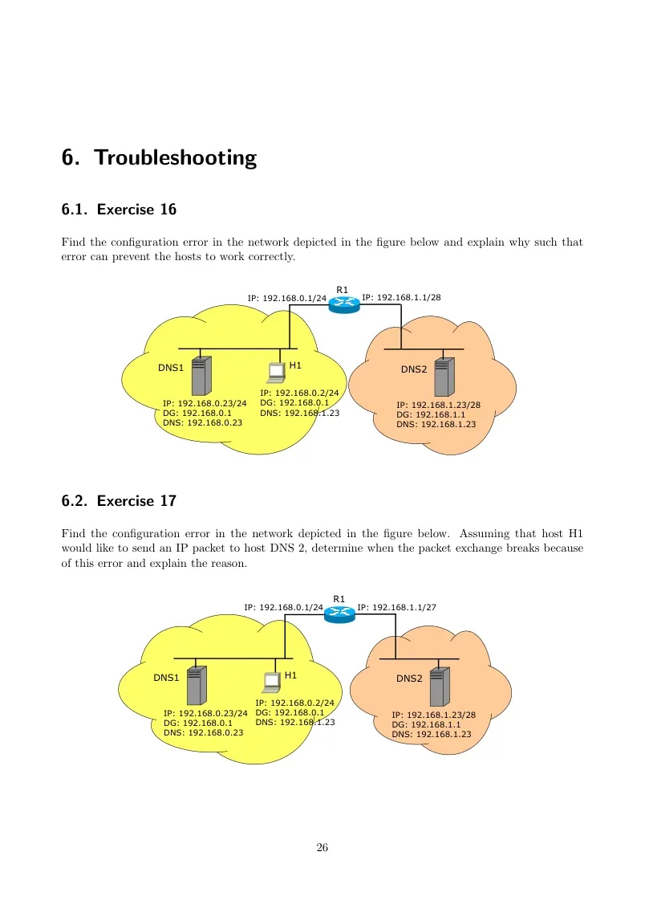
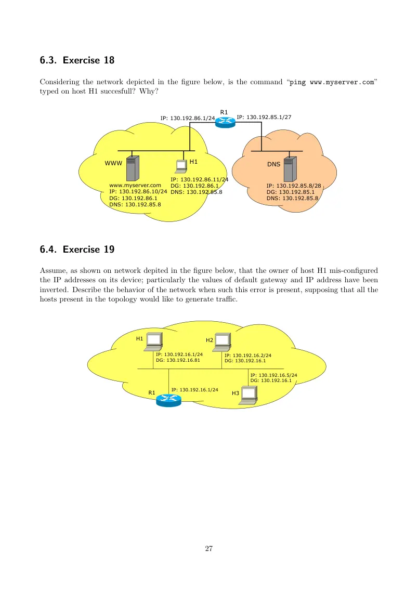
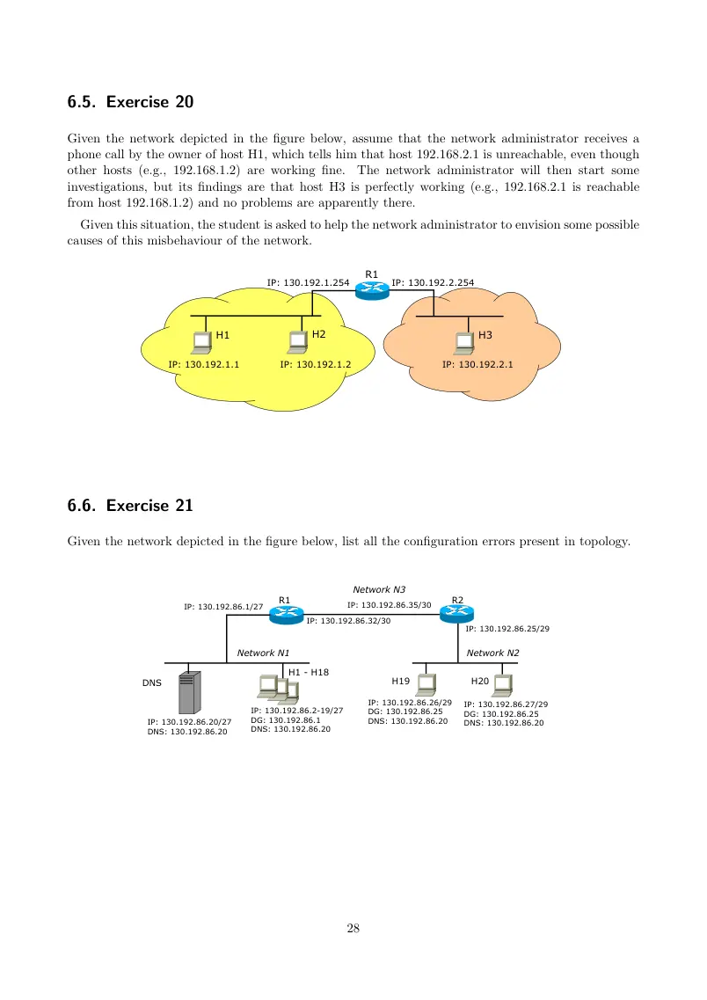

Troubleshooting · প্রতিটি প্রশ্নের নিচে মূল PDF পৃষ্ঠার ছবি ও solution page reference রয়েছে।
চিত্রের network-এ configuration error খুঁজে বের করো এবং ব্যাখ্যা করো কেন এটি host-গুলোর কাজ ব্যাহত করতে পারে।
রেফারেন্স: Exercises on IP Addressing, PDF p. 26

Router ও DNS2 একই IP subnet-এ নেই, তাই তারা সরাসরি একে অপরকে reach করতে পারে না। PDF বলেছে দুই endpoint-এর mask/range এমন হতে হবে যাতে উভয় address একই subnet-এ পড়ে; উদাহরণ /27 হলে 192.168.1.0–31 range দুটিকে অন্তর্ভুক্ত করে।
| Device / link | Issue / fix |
|---|---|
| R1 left interface | 192.168.0.1/24 |
| R1 right interface | 192.168.1.1/28 |
| DNS2 | 192.168.1.23/28 |
| Error | R1-এর 192.168.1.1/28 এবং DNS2 একই subnet-এ আছে, কিন্তু DNS2-র দেওয়া default gateway 192.168.1.1/28 অনুযায়ী network 192.168.1.16/28-এর বাইরে। /27 দিলে দুটিকে 192.168.1.0/27-এ আনা যায়। |
চিত্রের configuration error শনাক্ত করো। H1 যদি DNS2-তে IP packet পাঠায়, exchange-এর কোন পর্যায়ে সমস্যা হয় এবং কেন—তা ব্যাখ্যা করো।
Router-এর /27 subnet 192.168.1.0/27-এ DNS2 আছে, তাই R1 DNS2-তে সরাসরি packet পাঠাতে পারে। কিন্তু DNS2-এর /28 network হলো 192.168.1.16/28, যাতে gateway 192.168.1.1 নেই। ফলে DNS2 gateway-এ ফিরতি যোগাযোগ করতে পারে না।
| Step | Behavior |
|---|---|
| H1 → R1 | H1 DNS2-র address-এ packet পাঠায় default gateway 192.168.0.1-এ |
| R1 → DNS2 | Router-এর /27 অনুযায়ী DNS2 connected network-এ; packet পৌঁছাতে পারে |
| DNS2 → H1 reply | DNS2-র /28 network 192.168.1.16/28-এ gateway 192.168.1.1 নেই; return path ব্যর্থ হয় |
চিত্রের network বিবেচনায় H1-এ `ping www.myserver.com` চালালে তা সফল হবে কি? কেন ব্যাখ্যা করো।
রেফারেন্স: Exercises on IP Addressing, PDF p. 27

PDF-এর সমাধান: প্রদত্ত ping সফল হবে। H1, router-এর LAN interface এবং WWW server একই 130.192.86.0/24 LAN-এ। H1 DNS দিয়ে নাম resolve করতে পারে; DNS ও router-এর netmask mismatch থাকলেও নির্দিষ্ট traffic-টি কাজ করে। তবে অন্য destination-এ সমস্যা হতে পারে।
| Element | Address / prefix |
|---|---|
| H1 | 130.192.86.11/24 |
| WWW server | 130.192.86.10/24 |
| R1 interface on H1/WWW LAN | 130.192.86.1/24 |
| DNS | 130.192.85.8/28 |
| Result | PDF অনুযায়ী ping www.myserver.com সফল; তবে router/DNS side-এ netmask mismatch আছে, তাই অন্য destination-এ failure হতে পারে। |
H1-এর IP address এবং default gateway ভুল করে অদলবদল করা হয়েছে। Topology-র সব host traffic তৈরি করলে network-এর আচরণ বর্ণনা করো।
H1 local subnet-এর মধ্যে যোগাযোগ করতে পারে, কিন্তু ভুল gateway-এর কারণে বাইরের network-এ যেতে পারে না। H1 এবং R1—দুজনের IP 130.192.16.1 হওয়ায় H2/H3-এর ARP request-এ দুইটি reply আসতে পারে; router-এর MAC বাছলে traffic চলে, H1-এর MAC বাছলে outgoing traffic drop হয়। ফলে connectivity অনিয়মিত হতে পারে।
| Device | Configured value / effect |
|---|---|
| H1 | IP ও default gateway অদলবদল; IP 130.192.16.81, gateway 130.192.16.1 |
| R1 | 130.192.16.1/24 |
| H2/H3 | Gateway address 130.192.16.1-এর জন্য ARP reply router ও H1—দুই দিক থেকেই আসতে পারে |
| Impact | Router MAC বেছে নিলে traffic চলে; H1-এর MAC বেছে নিলে outgoing packet H1-এ গিয়ে drop হয়; ফল intermittent connectivity |
H1 জানায় 192.168.2.1 unreachable, যদিও 192.168.1.2-তে যোগাযোগ হয়। Admin নিশ্চিত করেছে H3 কাজ করছে এবং 192.168.1.2 থেকে 192.168.2.1 reach করা যায়। সম্ভাব্য কারণগুলো লিখো।
রেফারেন্স: Exercises on IP Addressing, PDF p. 28

PDF-এর সম্ভাব্য কারণ: H1-এর default gateway ভুল/অনুপস্থিত; H1-এর netmask খুব ছোট বা বড়; router-এ access-list/filtering; H3-এর personal firewall ICMP Echo Reply বন্ধ করেছে; অথবা router ICMP forward করছে না। DNS-কে মূল কারণ ধরা যাবে না, কারণ সমস্যা সরাসরি IP address দিয়েও দেখা যাচ্ছে।
| সম্ভাব্য কারণ | কেন |
|---|---|
| H1-এর default gateway ভুল/নেই | H1 local subnet-এর বাইরে যেতে পারে না |
| H1-এর subnet mask বেশি বড় prefix (> /24) | Gateway-কে directly reachable না ভাবতে পারে |
| H1-এর subnet mask খুব ছোট prefix (< /24) | Remote host-কে local ধরে ARP করবে; router পার হয়ে ARP যায় না |
| Router ACL/filter | H1 থেকে H3-তে traffic block করতে পারে |
| H3 personal firewall | ICMP Echo Reply বন্ধ থাকতে পারে |
| R1 ICMP forwarding/filtering | Ping packet drop হতে পারে |
| যা মূল কারণ নয় | DNS নয় (direct IP-তেও সমস্যা); H2↔H3 কাজ করায় router/H3 gateway সাধারণত ঠিক আছে |
চিত্রের topology-তে উপস্থিত সব configuration error তালিকাভুক্ত করো।
PDF-এর solution অনুযায়ী: (1) DNS server-এর default gateway নেই; (2) N1 ও N2-এর address space overlap করে, কারণ 130.192.86.24/29, 130.192.86.0/27-এর ভেতরে পড়ে; (3) N3-এর device-গুলো network ও broadcast address ব্যবহার করছে—130.192.86.32/30-এ সঠিক host address হলো .33 এবং .34।
| # | Error | Explanation |
|---|---|---|
| 1 | DNS default gateway নেই | DNS 130.192.86.0/27-এর বাইরে যোগাযোগ করতে পারবে না |
| 2 | N1 ও N2 address space overlap | N2-এর 130.192.86.24/29, N1-এর 130.192.86.0/27-এর ভেতরে পড়ে |
| 3 | N3-তে network/broadcast address device-এ দেওয়া | 130.192.86.32/30-এর valid host address .33 ও .34; .32 network এবং .35 broadcast |